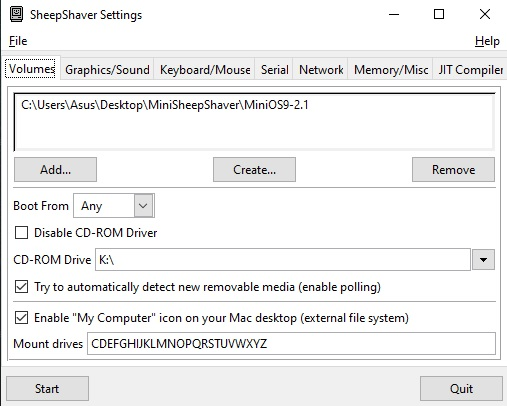
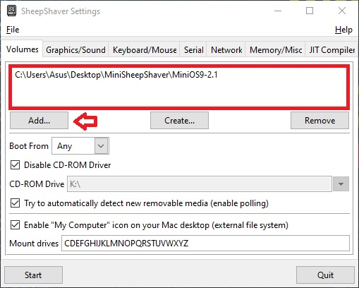

MiniSheepshaver Install Tutorials
Here I will provide photos and information on how to install and configure Sheepshaver on both Windows and Macintosh. I am not much of a linux guru so you will have to sort that out on your own.
Windows Installation
Installing Sheepshaver on Windows is a fairly easy task, but in order to do so you will first need to ensure you have GTK+ Installed on your system. You can download it here or if you already downloaded it from the Downloads page, continue on to the next step.
The first step after decompressing the MiniSheepshaver package is to open your Sheepshaver GUI application in the root folder. Simply decompressing this program is not enough, we will need to tell Sheepshaver what to do. Unfortunately I can't build MiniSheepshaver pre-configured with all of the settings as everyones computers are different, and the names of folders and locations where you put MiniSheepshaver will vary. So we will have to configure this application on a per usage basis.
Upon opening the GUI you should be greeted by this page. If you get an error, please refer to the first step above about installing GTK+. You will notice a few different things on this screen, but rest assured most of the options are not going to be needed to change.

To add the MiniSheepshaver disk image to the window above, click on Add... and you will receive a new pop up window.
The right window pane is your systems folder structure, where you can locate files to add to your volumes that are outside the root folder of Sheepshaver, the right window by default is your root folder, and where you will see files contained within the directory you are currently working with. You will see a file that says MiniOS9-x.x, select this file and hit okay. You will then see this file populated in the window, like above.
If desired you can ensure the "Enable "MyComputer" icon on your Mac Desktop" is checked, in which case when booted into the system you will see "This PC" hard drive, which is the disk drives on your host computer, and you can navigate the folders and copy files directly from your host PC to Sheepshaver.

We wont spend a lot of time on this page, ensure window refresh rate is set to Dynamic for best performance, and manually type out the resolution you desire, I recommend at least 1280 x 1024, or like mine here, 1440 x 900. Please make sure you are not attempting to exceed the resolution of your host monitor. I recommend against Full Screen video type, as per reports that it is less stable than Window mode. Use Full Screen at your own risk.